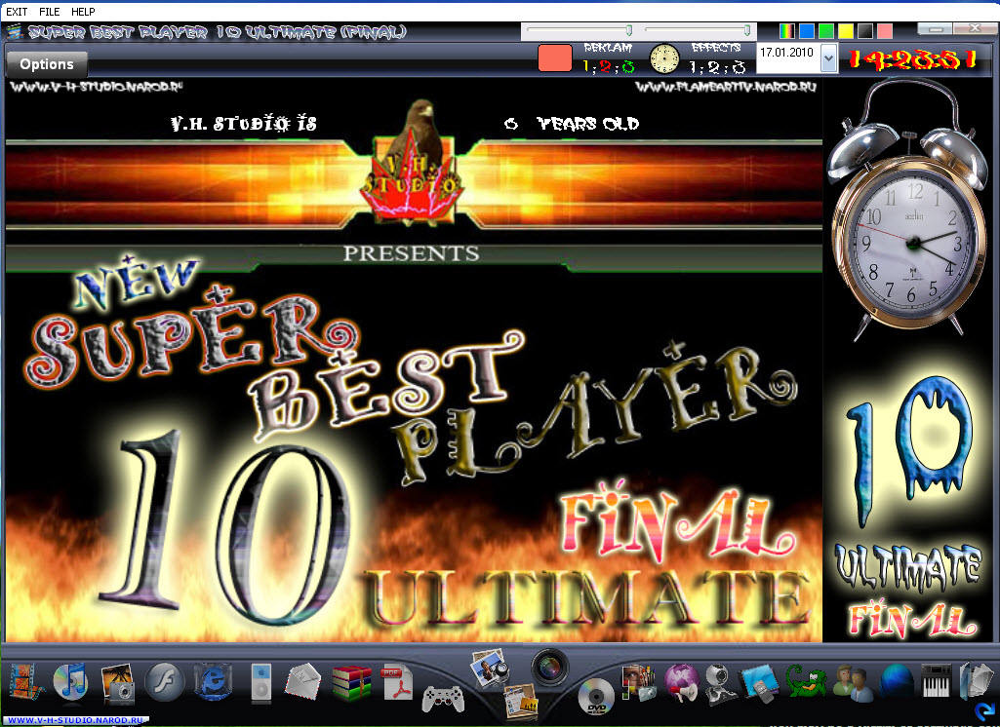
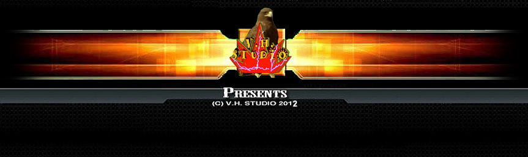
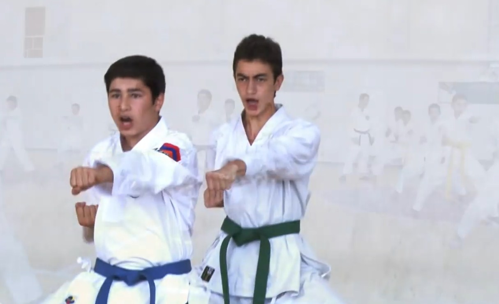
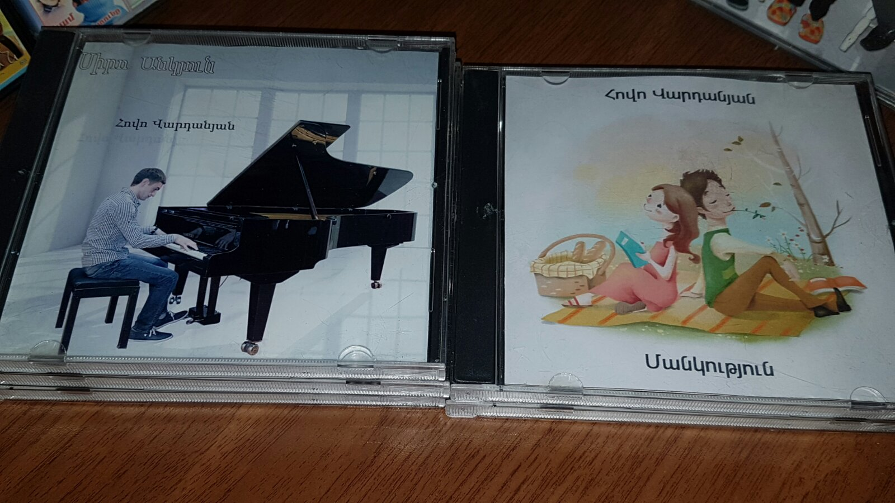
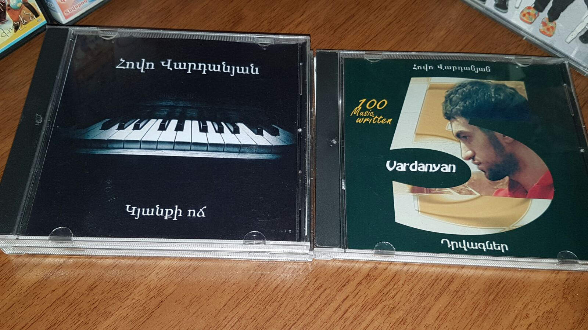
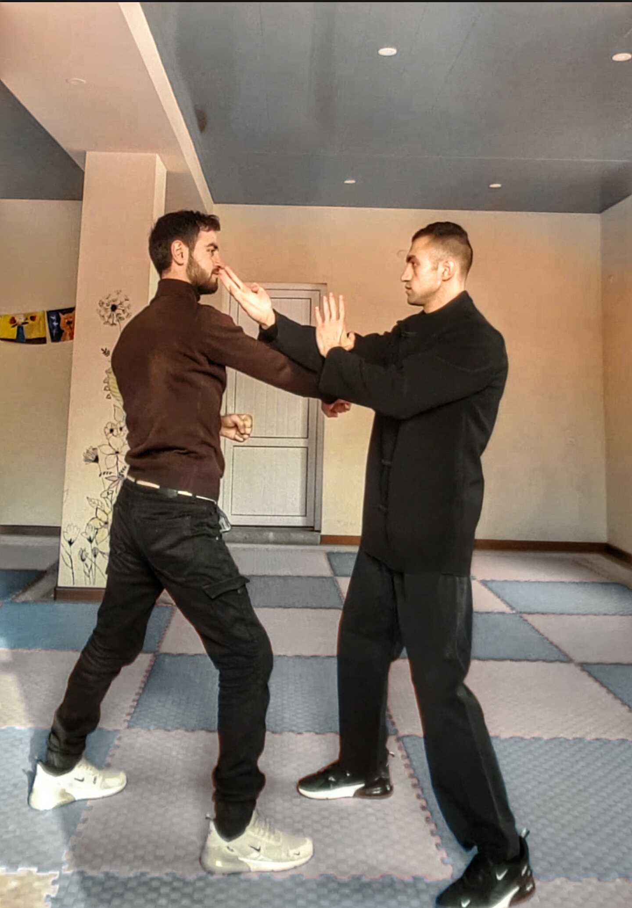
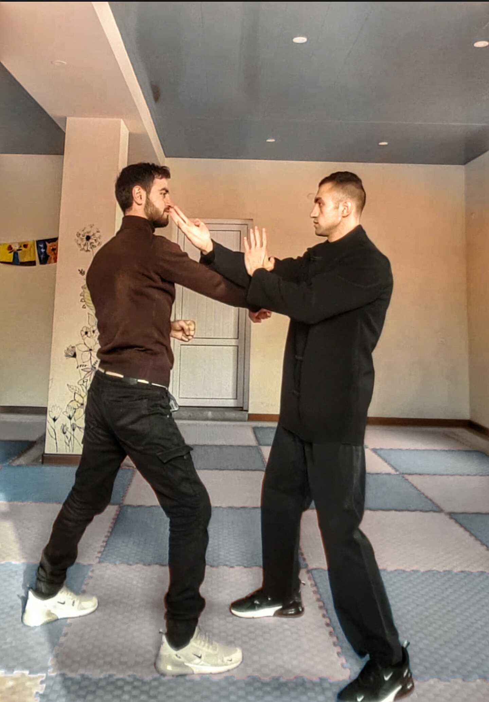

Այսօր ձեզ հետ խոսելու եմ աշխատասիրությունից, իմ ձեռքբերումներից, ոգեշնչումից, նպատակասլացությունից։ Ես Հովո Վարդանյանն եմ 28 տարեկան։ Ինչպես բոլորը ես էլ երեխա ժամանակ հաճախել եմ դպրոց, որը այդքան էլ չէի սիրում, իհարկե ես շատ շնորհակալ եմ դպրոցին, մենք ստացել ենք բազմաթիվ գիտելիքներ բայց ես լավ չէի սովորում, ծույլիկ էի, միայն ֆիզկուլտուրան ու նկարչությունն էր, որ փայլում էի։ Այն ժամանակ ես չէի կարող տարբերակել մարդու ձգտումը, աշխատասիրությունը, ոգեշնչումը, միայն հիշում եմ երբ 7 - 8 տարեկան էի վերցնում էի մատիտներս, տետրս, հարմար տեղավորվում էի իմ անկյունում և ինքնամոռաց նկարում, նկարում անդադար և ժամեր անց ցույց էի տալիս բոլորին, այդ պահին կողքիս ով կար, հիանում էին ասում էին ապրես,
ստացվում է ես զբաղվում էի մի բանով, որը իրոք սիրում էի և չէի մտածում, որ վաղը երկուս կարող եմ ստանալ։ Ըստ էության դա իմ առաջին շնորհն էր, որ անգիտակցաբար բացահայտում էի իմ մեջ։ Երկրորդը եղավ այն ժամանակ երբ մերոնք գնեցին համակարգիչ, այդ մետաղյա սարքի միջի ամեն ինչը մագնիսի պես ձգում էր ինձ, մինչ այդ պահը համակարգիչը ինձ համար հավանաբար խաղային սարքերն էին, որը վարձով վերցնում էինք և ես գիշերները նստում և ինքնամոռաց խաղում էի։ Կարծես նոր փուլ է սկսվում, նոր համակարգիչ իսկ էկրանը շատ ծանր էր ու շատ հաստ, դա այն ժամանակ նորմալ էր, մերոնք մասնագետ կանչեցին բնականաբար, որ սովորեին օգտվել այդ հսկա մետաղից իսկ ես արդեն չէի հիշում նկարչության մասին, էլ ուր մնաց դպրոցի առարկաները հիշեմ։ Անհամբերությամբ սպասում էի դասընթացի օրերին, մերոնք վերցնում էին թուղթ ու գրիչը և մեկ առ մեկ գրի առնում մասնագետի ցուցումները իսկ ես իրենց կողքին կանգնած գրում էի գլխիս մեջ։ Անցան շաբաթներ և ես արդեն հասկանում էի այդ մետաղյա սարքից և գիտե՞ք ինչ, ես սիրում էի այդ սարքը, ամեն հարմար պահին միացնում էի համակարգիչը ու անգիտակցաբար ամրապնդում էի իմացածս ու նոր հնարքներ էի սովորում էլի անգիտակցաբար, ստացվեց այնպես, որ համակարգչով սկսեցի նկարել, նկարներ մշակել, մոնտաժ անել, ստացվում է արդեն 8 - 9 տարեկանում գումար էի աշխատում մոնտաժներ անելով, նաև շատ էի սիրում խաղեր խաղալ, ուշք ու միտքս խաղի հանձնարարությունները կատարելն էր, և սկսեցի մտածել խաղ սարքելու ինչպես նաև ծրագիր սարքելու մասին։ Երևանի գրեթե բոլոր խանութներում հարցնում էի խաղ սարքող ծրագիր, ծրագիր սարքող ծրագիր, բայց ինձ պատասխանում էին նման բան չկա։ Ես տխրում էի, բայց ստացվում է չէի հանձնվում, որովհետև մեկ շաբաթ անց նորից էինք գնում այդ նույն խանութները և տալիս էի իրենց նույն հարցերը։ Այդպես ամիսներ անց գնում ենք մի քանի սկավառակ, որոնք ամենևին էլ խաղ կամ ծրագիր սարքելու համար չէին, այլ պարզապես Menu սարքելու համար են նախատեսված, բայց չգիտեմ ինչ է անցնում իմ ուղեղով և ես սկսում եմ այդ ծրագիրը ուղն ու ծուծով ուսումնասիրել ու ստացվում է, որ Menu սարքելու ծրագրով սարքում եմ 11 հատ Video Player ծրագիր ևս 6 այլ հնարավորություններ ունեցող ծրագրեր, անվանում եմ Player-ը, new Super Best Player 10 Ultimate Final
ներբեռնել Super Best Player 10 Ultimate Final - ը
Super Best Player 10 Ultimate Final - ի Crack-ը
B4H3 - WC00 - I9PY - A5TL - F05Q
իսկ մյուս ծրագիրը Historical Star։ Ստեղծում եմ վիդեո մոնտաժով արծիվի կերպարով Logo անիմացիա, որը լինելու էր իմ համակարգչի մեջ գտնվող studio-ի լոգոտիպը, ստեղծեցի V-H-Studio-ն:
որը ստեղծելու էր տարբեր ծրագրեր ու խաղեր, նույնիսկ Web կայք եմ բացել ստուդիոյիս համար բացարձակապես դրանից չհասկանալով և այդ հասցեն չգիտեմ ինչու մինջև հիմա գործում է, V-H-STUDIO.narod.ru այստեղ դուք կարող եք տեսնել 10 տարեկան Հովո Վարդանյանի մտահաղացումները, նախագծերը և ֆանտազիաները, վերջին թարմացումը կայքի արել եմ 2012 թվականին։ Մոտավորապես 12 տարեկանում ստեղծում եմ Քաղցր Մանկություն խաղը 20 սենյակից բաղկացած, 14 տարեկանում Քաղցր Մանկություն 2 խաղը։ 8 տարեկանից զբաղվել եմ կարատե մարտարվեստով
և 15 տարեկանում թողել եմ առողջական խնդիրների պատճառով, նաև համակարգիչն եմ թողել տեսողությանս անկման պատճառով, դե այն ժամանակվա էկրանները շատ էին ցավեցնում աչքերը, երկարատև բուժումներ ու էլի վերադարձել եմ։ 16 տարեկանում սովորել եմ արտիստական ստուդիայում մեծն վարպետ Գուժ Մանուկյանի կուրսում
Խաղացել եմ մի քանի ներկայացումներում գլխավոր դերակատարմամբ, նկարահանվել եմ սերիալներում, Անծանոթը, Տիգրանի մոլորակը... նաև մեծ սեր էի զգում երաժշտական գործիքների նկատմամբ և սկսեցի Կիթառ սովորել մեծն վարպետ Ռուբեն Բագրատունի Հախվերդյանի մոտ։
Նաև ուզում էի այլ գործիքներ նվագել և սկսեցի պիանոյից, հաճախել եմ ընդամենը մեկ ամիս, ես ցանկանում էի Մանսուրյան նվագել, Yiruma նվագել, բայց այդպիսի գործեր չէին սովորեցնելու, ես էլ ինքնակրթությամբ զբաղվեցի և Մանսուրյան և Yiruma ու շատ այլ կոմպոզիտորների գործեր նվագեցի, և ինքս ստեղծեցի, գրեցի իմ սեփական երաժշտությունները, թվով 100-ը անցան
հանեցի 5 ձայնասկավառակ։
 Բայց ես էլի էի ուզում այլ գործիքներ սովորել, ինքնուրույն սովորեցի շվի, ռեքորդեր, շրթհարմոն, ուկուլելե և ձեռքերի ֆլեյտա։
Մինչ օրս էլ կան գործիքներ, որ ուզում եմ սովորել, հարփ, պան ֆլեյտա։ Ունեցել եմ կարատեի խմբակ, որտեղ երեխաների հետ շատ հետաքրքիր և արդյունավետ պարապմունքներ ենք ունեցել, ստեղծել էի մի գաղափարախոսություն #Sport and only #Sport Philosophy, որի մակագրությամբ բազում երեխաների նվիրում էի սպորտային հավերժություն։
Նկարահանեցի կարճամետրաժ մարտական ֆիլմ 9 - 10 տարեկան երեխաների մասնակցությամբ, որտեղ և ռեժիսորն էի և սցենարի հեղինակն էի և մոնտաժողն էի և իհարկե մենամարտը բեմադրողը։
Երեխաների հետ ունեմ աշխատելու մեծ փորձ, ինձ բոլորը լսում են, հարգում և կարծում եմ նաև սիրում։ Այնուհետև Wing Chun Kung Fu մարտարվեստի խումբ եմ ունեցել, որտեղ տարբեր տարիքային մարզիկների փոխանցում էինք բացառիկ տեխնիկան։
 

2019 թվականին ընկերոջս հետ, որը այդ պահին PHP ծրագրավորող էր սկսեցինք սովորել HTML CSS, նա համոզեց, որ սովորեմ սկզբում չէի ցանկանում բայց հետո մտածեցի ինձ մոտ այսքան բան է ստացվել, դա էլ անեմ։ Սովորելու առաջին մեկ շաբաթը դժվարացա ու բարկացա ինձ վրա, պատճառը որն է, որ դժվարանում եմ ու սկսեցի շատ աշխատել, շատ, օրական 8 - 12 ժամ և ես ինքս ինձ հաղթեցի, շատ կարևոր է, որ մարդը ինքը իրեն չպարտվի։ Այս կյանքում ես ունեմ մեկ մրցակից և նա իմ անձն է, մշտապես փորձում եմ ինքս ինձ գերազանցել։
Այս խոսքերը և շատ այլ խոսքեր գրել եմ քանի որ շատ եմ սիրում Փիլիսոփայությունը, Մարդը պետք է օրինակ լինի մյուսների համար, իր գրագետ կյանքով,
ես աշխարհի բոլոր Մեծություն Մարդկանցից ոգեշնչվել եմ, հիացել, սովորել։ Կոնկրետ օրինակներով թե ումից ինչ եմ վերցրել։ Կոմիտաս - հոգու մաքրություն։ Արթուր Մեսչյան - մեծագույն փիլիսոփայություն։ Cristiano Ronaldo - անսահման աշխատասիրություն։ Bruce Lee - վարպետություն։ IP MAN - կատարելություն, հավասարակշռվածություն, բացի այն, որ մեծ վարպետը եղել է լավագույնը Wing Chun Kung Fu - ում, այլ ունեցել է անսահման ու յուրահատուկ հոգատար վերաբերմունք իր կնոջ ու երեխաների հանդեպ։ Yiruma, Մանսուրյան - պիանոյի հնչյուններով արտահայտել սեր։ Յուրի Վարդանյան - լինել պողպատե մկաններով։ Գարսիա Մարկես - մի քանի տողով նկարագրել մի ողջ պատմություն։ Պետք է լավագույններից սովորել, լավագույններով հիանալ, ոգեշնչվել, մոտիվացվել, պետք է լինել չափազանց աշխատասեր, սեփական անձը կերտել ու զարգացնել, չկա ոչ մի կախարդական փայտիկ, եթե դու օրական մեկ նոր մեթոդ սովորես կստացվի 365 նոր գիտելիք մեկ տարվա ընթացքում։ Ցանկանում ես հաջողության հասնել ինչ-որ բանում ուրեմն առաջին շրջանում ծանոթացիր, երկրորդում հասկացիր, երրորդում սովորիր, չորորդում տիրապետիր, հինգերորդ շրջանում ստեղծագործիր իսկ վեցերորդում վայելիր չարչարանքիդ ամբողջ բերկրանքը, իսկ ամենա վերջում միշտ մնա ուսման ծարավ։
Այսինքն անդադար պետք է աշխատել, ինքդ քեզ հաղթելու իմ մշակած մեթոդը, կատարում ես ինչ-որ աշխատանք, վայրկյանաչափով պահում ես ժամանակ, ենթադրենք ավարտեցինք 15 րոպեում գրանցում ես թերթիկի վրա, նույն աշխատանքը սկսում ես զրոյից և այս անգամ պարտադիր պետք է գերազանցես նախորդ ցուցանիշդ, թեկուզ 10 վայրկյանով, այսինքն պետք է երկրորդ անգամը հանկարծ 15 րոպեից ավել չլինի, դա էլ արեցիր գրիր նոր ռեկորդդ և նույն աշխատանքը սկսիր զրոյից, սա էլ պետք է գերազանցի երկրորդ ցուցանիշդ։ ընդհանուր 3 անգամը տվյալ աշխատանքի մեջ բավարար է, իսկ եթե հանկարծ երեք շրջաններից մեկում ավելի ուշ ես վերջացրել քան նախորդ ցուցանիշդ ուրեմն դու պարտվում ես ինքդ քեզ և սկսում ես նույն մրցույթը առաջին շրջանից։ Ստացվում է դու տարբերակ չունես, այսօր թե վաղը դու ստիպված ես հաղթել ինքդ քեզ։ Ես կիրառել եմ այս մեթոդը, այդ պատճառով էլ այսօր իմ ոլորտում կանգնած եմ բուրգի գագաթին։ Գրել եմ 80-ից ավել աֆորիզմներ և կարողանում եմ կարդալ յուրահատուկ ձայնով։ Կատարելագործիր ուղեղդ, ես հատուկ ձև էի ընտրել դա անելու համար, պիանո նվագում էի հակառակ ձեռքերով, աջը անում էր ձախի գործը, ձախը աջինը։ Գտեք մեծ սեր, սիրեք և սիրված եղեք։